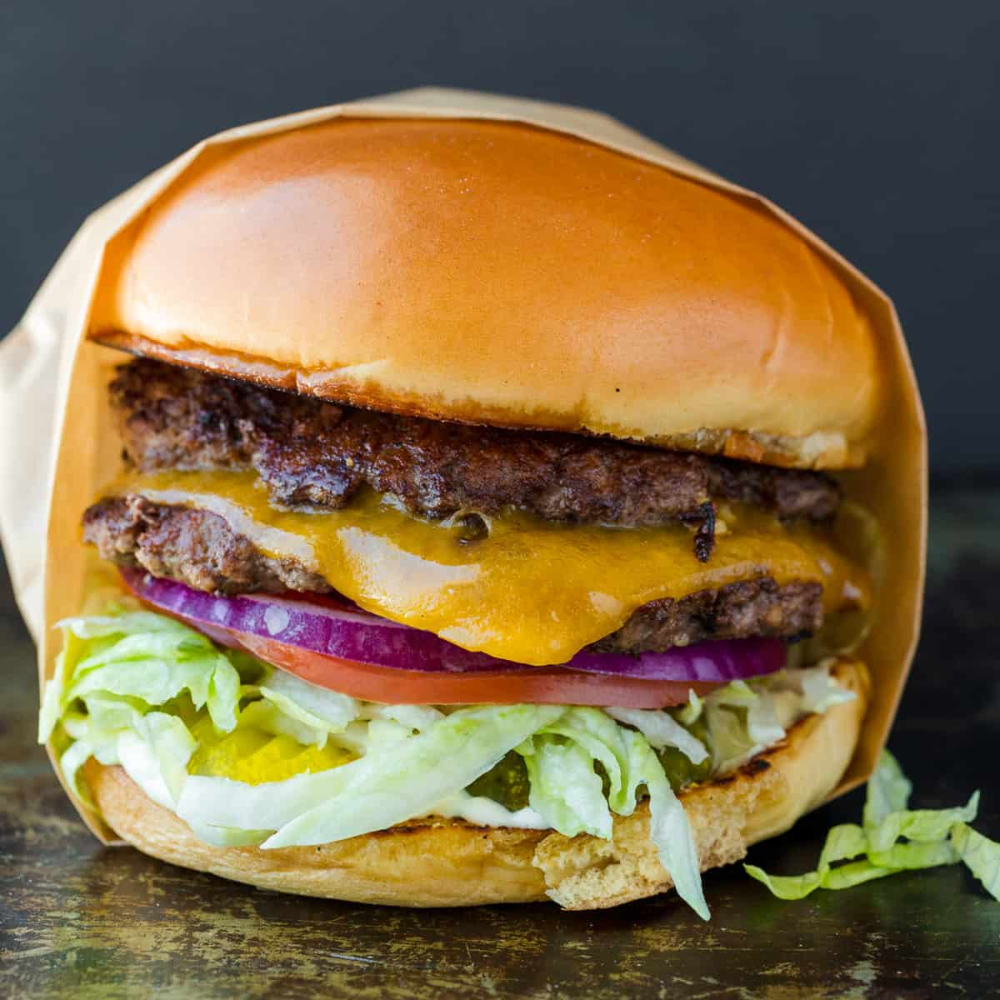

Smash Burger

This is a great American dish, a classic preferably
with 80% lean and 20% chuck ground Beef
CARNALDISH BURGER JUICE
- 1/2 stick butter, melted
- 1 tablespoon worcestershire sauce
- 1/2 tablespoon fish sauce (trust me, adds a great depth of flavor)
- a few dashes of liquid smoke
BURGERS
- 1 pound ground chuck (80/20)
- Kosher salt and black pepper, to taste
- Cheese, any kind you choose)
- Brioche buns, buttered and toasted
- Toppings of choice (try to keep it simple if you can)
BURGER SAUCE
- 1/4 cup mayo
- 1/4 cup ketchup
- 1/4 cup spicy brown mustard
- 2 minced garlic cloves
- 2 tablespoon white vinegar
- 1/8 teaspoon cayenne pepper
- 1/8 teaspoon smoked paprika
- salt and pepper, to taste
- pinch of sugar, to taste
Directions
- Mix all ingredients for the burger sauce, and set aside in the fridge.
Mix all the Burger Juice ingredients together in a small bowl.
In another medium-sized bowl, add the beef.
Pour the Burger Juice into the beef, and gently break it up with a spoon or your hands and GENTLY mix
thoroughly. Do not over-work your meat, be very very gentle with it. Once it’s thoroughly mixed, scoop
into
3-4oz sized balls. Cover the burger balls with plastic wrap and refrigerate for a minimum of a half
hour.
You want the meat to be super cold. You could also pop into your freezer for about 15 minutes.
-
When ready to cook, heat a large cast iron skillet over high heat until SUPER HOT. Drop a tiny sprinkle
of
water to test it, if it immediately sizzles and bounces around and disappears, it’s ready. No need to
add
oil, there’s plenty of fat in the burger. Remove your burgers from the fridge or freezer and sprinkle
them
with kosher salt and pepper. Place about 3 to 4 balls in the skillet, leaving room for them to be
smashed
down. After 30 seconds of searing, smash them all the way down until they can’t be smashed anymore, with
a
large heavy skillet. Leave them alone and let them cook for about 3 to 4 minutes, or when the edges
start to
turn brown. Flip them over and immediately place a slice of cheese on top of each patty. When the cheese
melts, they’re ready, about 1 to 2 minutes longer.
-
Build your burger with the toppings of your choice and enjoy